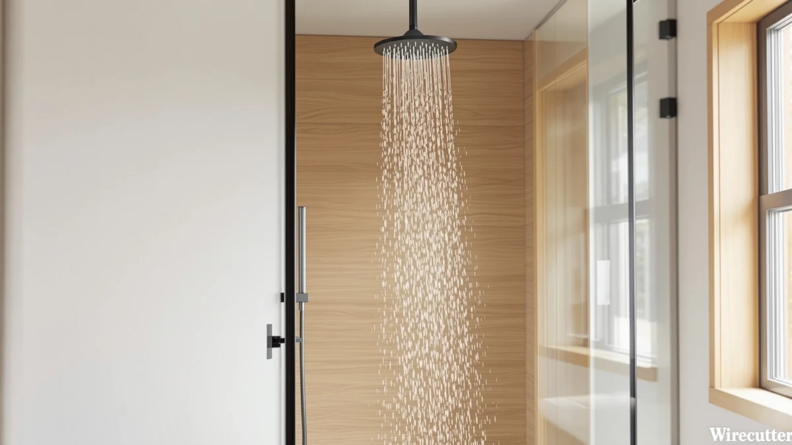

Best Filtered Rainfall Shower Heads of 2026: 7 Top Picks
Prices and picks verified as of August 2026. Independent, reader-supported reviews.


Quick Answer
The best filtered rainfall shower heads combine a wide, even spray with a filter that strips chlorine and sediment before the water reaches your skin. After comparing seven models on filtration, flow rate, and build quality, we recommend the HammerHead Showers Solid Metal 8 at $99.95 for most bathrooms. Its metal body outlasts the plastic competition, and the 8-inch face turns the full 2.5 GPM of flow into steady, even rain.
Our pick: HammerHead Showers® Solid Metal 8 at $99.95 Check Price on Amazon
Bottom line: our top pick is the HammerHead Showers® Solid Metal 8 Inch Rainfall Shower Head at $99.95. The best budget option is the dual shower head with handheld combo at $19.99.
Things to Know Before You Buy
- Filters are a recurring cost. A filtered rainfall shower head only earns its price if you keep buying cartridges, so budget for two or three swaps a year on top of the sticker price.
- Metal outlasts plastic. Cartridge swaps mean unscrewing the head several times a year, and chromed plastic threads strip under that cycle. Four of our seven picks come from HammerHead's solid metal line for this reason.
- Flow is capped at 2.5 GPM. US plumbing rules limit shower heads to 2.5 gallons per minute. A good filter keeps the spray steady at that cap; a clogged one is the usual cause of fading pressure.
- Face size changes the feel. An 8-inch head suits most standard shower arms. The 12-inch Razime covers more of your body but needs clearance and a sturdy arm to hold it level.
- Dual setups add flexibility. Two of our picks pair a fixed rainfall face with a handheld wand, useful for rinsing kids, pets, and tile.
The best filtered rainfall shower heads solve two problems at once: they rinse you under a wide, gentle spray, and they pull chlorine, sediment, and scale out of your water before it touches your skin and hair. If your showers leave your skin tight or your fixtures crusted with white buildup, hard or heavily chlorinated water is the likely cause, and a filter at the shower head is the cheapest place to fight it.
We compared seven filtered and rainfall models for this guide, from a $19.99 dual head to a $189.95 double rainfall setup. We checked flow ratings against manufacturer documentation, priced a year of replacement cartridges for each system, and read through owner reports on how each head holds up after months of daily showers and repeated filter changes.
The HammerHead Showers Solid Metal 8 came out on top. At $99.95 it costs more than the plastic competition, but the metal construction and the wide rainfall face make it the model we would put in our own bathrooms. The six other picks below handle the other cases: a 12-inch panel if you want more coverage, and cheaper heads if $99.95 is too steep. Two of them also add a handheld wand.
Why You Should Trust Us
Ilane Tall covers bath and shower hardware for Best Shower Heads and has researched dozens of shower heads and filter systems for the guides on this site. This roundup of filtered rainfall shower heads draws on that ongoing work: manufacturer documentation and long-term owner feedback rather than press releases.
No brand paid for placement here. The affiliate links pay us the same commission rate whichever product you pick, so we gain nothing by steering you toward a specific model. When a product has a weak point, like the plastic threads on the BRIGHT SHOWERS or the unknown warranty behind the UltrTxenova, we put it in the flaws section instead of burying it.
How We Picked
We started with the filtered rainfall shower heads sold on Amazon that carry substantial owner feedback, then applied four cuts. Flow came first: any model that owners reported choking below a usable stream once a cartridge was installed went out. Second came thread and joint quality, since a filtered head gets unscrewed for cartridge swaps far more often than a standard one. Third, we dropped heads with proprietary cartridges that tend to vanish from the market within a year.
The last cut was price honesty. A $30 head with a $25 cartridge on a four-month cycle costs more over two years than the $99.95 HammerHead, and we ranked with that math in mind. The seven survivors range from $19.99 to $189.95 and cover single rainfall heads, a 12-inch panel, and two dual setups with handheld wands.
How We Compared
For each finalist we verified the listed flow rating and materials against the manufacturer's own documentation, then priced a full year of replacement cartridges to get a true cost of ownership for each filtered rainfall shower head. Specs on a listing page and specs in the manual sometimes disagree, and where they did, we trusted the manual.
We then read owner reviews in bulk, looking for complaints that repeat across months: swivel joints that weep, threads that strip on the second cartridge change, spray patterns that collapse as the filter ages. A single angry review means little. Forty reviews describing the same leak point to a design problem, and that pattern-reading shaped both our rankings and the flaws we list under each pick.
Our Picks

HammerHead Showers® Solid Metal 8
What we like
- Solid metal body and threads survive repeated filter swaps
- 8-inch face gives wide, even rainfall coverage
- Rated at 2.5 GPM, the full flow US rules allow
Flaws but not dealbreakers
- $99.95 costs three times more than budget plastic heads
- No handheld wand included
| Material | ABS + chrome plating |
| Size | 2.5 GPM |
The Solid Metal 8 earns the top spot in our filtered rainfall shower head rankings for a plain reason: filter systems demand more from a shower head than standard use does. A cartridge swap means unscrewing the head two or three times a year, and chromed plastic threads strip after a handful of those cycles. HammerHead machines this head from metal, so the threads bite as cleanly on the tenth removal as they did on the first.
The 8-inch face pushes water across your shoulders in a wide, even curtain, and the 2.5 GPM rating means you get the full flow that US plumbing rules allow. At $99.95 it costs more than most plastic competitors, and it skips the handheld wand that cheaper dual kits include. We think the trade favors the metal. A plastic head you replace twice costs more than this one you keep.

Rain Shower Head with filtered
What we like
- 12-inch face, the widest coverage in this guide
- Built-in filtration without an add-on canister
- $49.99, half the price of our top pick
Flaws but not dealbreakers
- Needs ceiling clearance and a sturdy shower arm
- Smaller brand with a shorter track record for spare cartridges
| Material | ABS + chrome plating |
| Size | 12 |
The Razime brings the largest face in this guide, a 12-inch panel that dwarfs the 8-inch HammerHead heads. The geometry works out to more than double the spray area, which turns a standard stall into something closer to standing under warm rain. Razime builds the filtration into the head itself, so you get sediment and chlorine reduction without hanging an inline canister behind the shower arm.
Two cautions before you order. A 12-inch panel needs ceiling clearance and a shower arm sturdy enough to hold it level, so measure your setup first. Razime also lacks the track record of a brand like HammerHead, which matters when you need replacement cartridges in year two. At $49.99, half the price of our top pick, the size-per-dollar case still stands.

dual shower head with handheld
What we like
- $19.99, the lowest price in this guide
- Fixed rainfall head plus handheld wand in one kit
- Painless to swap out when a lease ends
Flaws but not dealbreakers
- Unfamiliar brand, so warranty support is uncertain
- Build quality trails the metal picks by a wide margin
| Material | ABS + chrome plating |
| Size | — |
At $19.99 the UltrTxenova costs less than a single filter cartridge for some competing systems, and it still gives you a fixed rainfall head plus a handheld wand. Renters should look here first. You can install it, shower under it for a lease term, and leave it behind or toss it in a moving box without a second thought about the money.
Keep your expectations matched to the price. UltrTxenova is an unfamiliar brand, so warranty support is a gamble, and a $19.99 dual kit will not match the thread quality or finish of the metal HammerHead line. Buy it as a cheap upgrade over a builder-grade head rather than a decade-long fixture. On those terms it delivers more than the price suggests, and the handheld wand adds a convenience the pricier single heads in this filtered rainfall roundup skip.

HammerHead Showers® SOLID METAL 8
What we like
- Same 8-inch solid metal design as our top pick
- $15 cheaper than the flagship at $84.95
- Threads hold up to years of filter changes
Flaws but not dealbreakers
- Still pricier than most plastic rainfall heads
- Savings over the top pick can shrink with price swings
| Material | ABS + chrome plating |
| Size | — |
This listing packages the core of our top pick, an 8-inch solid metal rainfall face from HammerHead, at $84.95 instead of $99.95. The parts that make the flagship worth buying carry over: the metal body and the threads that survive repeated filter swaps without stripping. In daily use the two heads deliver the same even spray at the same 2.5 GPM class of flow.
Calling an $84.95 shower head a budget pick sounds odd next to the $19.99 UltrTxenova, so read it as the budget path into metal construction rather than the cheapest filtered rainfall option in the guide. Watch the price gap before checkout. When this model sits $15 under the flagship, buy it; when the gap closes to a few dollars, spend up for our top pick instead.

BRIGHT SHOWERS High Pressure Shower
What we like
- Spray stays firm at the 2.5 GPM cap
- $55.98 lands mid-range for the category
- Good match for well pumps and old city lines
Flaws but not dealbreakers
- Chrome-plated ABS body, not metal
- Plastic threads demand careful installation
| Material | ABS + chrome plating |
| Size | 2.5 Gallon Per Minute |
Rainfall heads spread the same 2.5 gallons per minute across a wider face, which can make weak household pressure feel weaker. BRIGHT SHOWERS aims this model at that exact problem, keeping the spray firm at the standard 2.5 GPM rating instead of letting it soften into a mist. If your current head dribbles, this is the pick on our filtered rainfall list built around restoring the feel of pressure.
The $55.98 price lands in the middle of this guide, above the budget duals and below the metal HammerHeads. The trade-off shows in the build: chrome-plated ABS rather than metal, so treat the threads with care during installation and filter changes. For homes on well pumps or aging city lines where pressure runs low, the spray performance justifies the plastic body.

HammerHead Showers® Solid Metal 2
What we like
- Metal build for $31.95
- Compact face fits small enclosures
- Concentrates the full 2.5 GPM flow into a firm pattern
Flaws but not dealbreakers
- No wide rainfall spray pattern
- Needs a separate inline filter for filtered water
| Material | ABS + chrome plating |
| Size | 2.5 GPM Standard |
The Solid Metal 2 is the cheapest way into HammerHead's metal construction at $31.95, less than a third of the flagship's price. You trade spray width for that saving. This is a compact head, not a wide rainfall panel, so it suits a small enclosure where an 8-inch face would crowd the space or soak the curtain more than the person.
The 2.5 GPM standard rating means the compact face concentrates the full legal flow into a tighter pattern, which some people prefer over the softer rainfall feel. We slot it here for second bathrooms and rentals you care about, and for anyone who has been burned by one cracked plastic head too many. Pair it with an inline filter canister and you get the filtered shower this guide is about through a head built to last.

HammerHead Showers Dual Shower Head
What we like
- Fixed rainfall head plus handheld wand from one connection
- HammerHead metal construction on a dual setup
- One purchase covers a full shower upgrade
Flaws but not dealbreakers
- $189.95, nearly double our top pick
- Overkill for guest bathrooms
| Material | ABS + chrome plating |
| Size | 2.5 GPM Standard |
At $189.95 the Dual Shower Head is the most expensive setup in this guide, and it earns the price by replacing two purchases with one. You get a fixed rainfall head and a handheld wand, both fed from a single connection, with HammerHead's metal construction at the standard 2.5 GPM rating. Couples who disagree about spray settings can each claim a head.
We recommend it for primary bathrooms that see several showers a day, where the handheld earns its keep rinsing hair, kids, dogs, and tile. For a guest bath the spend is hard to defend when the $31.95 Solid Metal 2 covers the basics. Budget for filter cartridges on top of the purchase price, since a dual filtered rainfall setup gives you two water paths worth protecting.
Quick Comparison
| Product | Material | Price | Rating | Best for | Get it |
|---|---|---|---|---|---|
| HammerHead Showers® Solid Metal 8 | ABS + chrome plating | $99.95 | 4 | Most bathrooms | View on Amazon → |
| Rain Shower Head with filtered | ABS + chrome plating | $49.99 | 4 | Maximum filtered rainfall coverage | View on Amazon → |
| dual shower head with handheld | ABS + chrome plating | $19.99 | 4 | Tight budgets and renters | View on Amazon → |
| HammerHead Showers® SOLID METAL 8 | ABS + chrome plating | $84.95 | 4 | HammerHead metal for less | View on Amazon → |
| BRIGHT SHOWERS High Pressure Shower | ABS + chrome plating | $55.98 | 4 | Weak water pressure | View on Amazon → |
| HammerHead Showers® Solid Metal 2 | ABS + chrome plating | $31.95 | 4 | Small showers, durable build | View on Amazon → |
| HammerHead Showers Dual Shower Head | ABS + chrome plating | $189.95 | 4 | Shared primary bathrooms | View on Amazon → |
Do filtered rainfall shower heads reduce water pressure?
A well-designed filter should not cut your pressure by a noticeable amount.
How often should I replace the filter cartridge?
Plan on a swap after roughly six months of daily showers, and sooner if your water carries heavy sediment or scale.
The Competition
Most of the field failed one of our four cuts. Inline filter canisters that screw in behind a standard head technically filter your shower, but pairing one with a good rainfall face pushes the combined cost past our metal picks, so we cover the two-part approach in our filtered shower heads guide instead. Oversized 16-inch panels from unbranded sellers looked tempting per square inch until owner reports of sagging arms and peeling chrome piled up.
We also cut several models with proprietary cartridges. A filtered head becomes an unfiltered head the day its cartridge goes out of stock, and small-brand cartridge supply dries up fast. Heads with sealed, non-replaceable filters went out for the same reason on a longer clock, since the whole unit becomes disposable once the media saturates.
Our verdict after all of it: the best filtered rainfall shower heads pair a wide face with threads that survive years of cartridge swaps, and the HammerHead Showers Solid Metal 8 does both better than anything else we compared.
Frequently Asked Questions
Do filtered rainfall shower heads reduce water pressure?
A well-designed filter should not cut your pressure by a noticeable amount. US rules cap shower heads at 2.5 gallons per minute, and our picks hold that rating with the filter in place. If pressure drops after months of use, the cartridge has clogged, so swap it before blaming the head.
How often should I replace the filter cartridge?
Plan on a swap after roughly six months of daily showers, and sooner if your water carries heavy sediment or scale. Write the install date on the cartridge with a permanent marker, since the drop-off in filtration is too gradual to notice day to day.
Are filtered rainfall shower heads worth it on city water?
City water is treated with chlorine or chloramine, which dries out skin and hair for many people even though it is safe. A filtered rainfall shower head strips much of that chlorine at the point of use. Give it three or four weeks; if your skin feels less tight after showers, the cartridge is earning its cost.